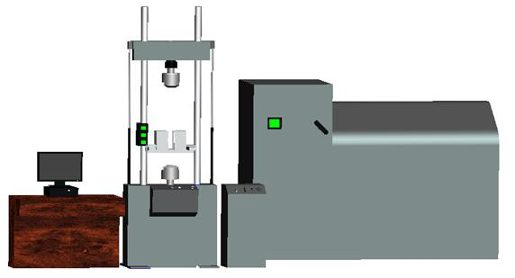

高温拉伸实验
高温拉伸实验是测定材料在高温条件和静载荷双重作用下的力学性能的最基本和最重要的实验之一。 工程设计中所选用材料的强度、塑性和弹性模量等机械性能指标，大多是以拉伸实验为主要依据，而航空发动机、高压蒸汽锅炉、 汽轮机及化工炼油设备等很多机件都是长期在高温条件下服役， 因此测试材料在高温条件下的拉伸性能极为重要。本高温拉伸实验选用的是钛合金这种航空用典型材料。
MTS landmark型高温高频疲劳试验机构造
测定材料力学性能的主要设备是材料试验机。供静力实验用的万能材料试验机有液压式、机械式和电子机械式等类型。下面介绍的试验机为液压式试验机，以MTS landmark型高温高频疲劳试验机为例，它由主机、控制器、计算机系统、液压源、夹具控制柜及附件所组成(图1.1)。
图1.1 液压式试验机布局图
1.主机部分
液压式试验机主机由机架、横梁、作动器、夹持系统、传动系统等五部分组成。
2.附件
高温炉等附件可以达到1400℃的试验温度。